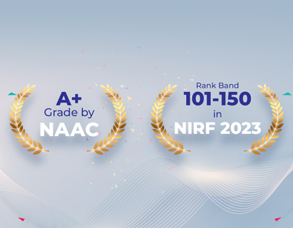

WELCOME TO OUR COLLEGE
Nitte Mahalinga Adyantaya Memorial Institute of Technology(NMAMIT), Nitte, established in 1986 and
recognized by the All India Council for Technical Education, New Delhi, has been a constituent
college of Nitte (Deemed to be University), Mangaluru,since June 2022. Rank band 101-150 in the
National Institutional Ranking Framework (NIRF) 2023 by Ministry of Education, Government of India,
the College has been placed under 'Platinum' category for having high industry linkages by
the AICTE-CII Survey of Industry-Linked Technical Institutes 2020. NMAMIT, the off-campus centre
of Nitte DU located at Nitte village, has active collaborations with several international
universities and organizations for faculty and student exchanges, research, internships
and placements.